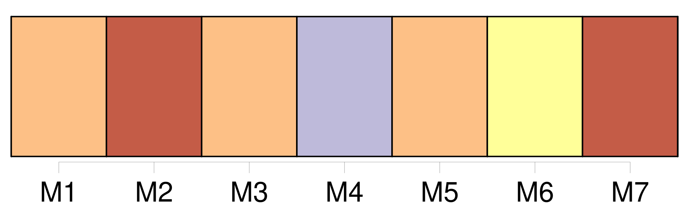
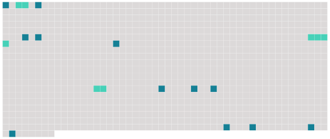

Longueur nb maillons : 15 mentions |
 |
[c'] est [ma bonne] ... [elle] sait... [12 phrases]
» [1 phrases]
[La bonne, effarée] , était assise par terre au haut de l'escalier, avec une bougie allumée à [son] côté, n'ayant pas osé demeurer près du mort. [14 phrases] » [La bonne] alla chercher le démêloir et la brosse de [sa] maîtresse ; mais comme [elle] tremblait et [arrachait] , en des mouvements involontaires, les cheveux longs et mêlés, Mme Lelièvre s'empara violemment du peigne, et elle rajusta la chevelure avec douceur, comme si elle l'eût caressée. [13 phrases] Je criai : « [Rosé] , vite, [apportez] -moi les serviettes et la cuvette, et [refaites] la chambre ; [dépêchez] -vous, nom de Dieu!! |
 |
Il est possible de télécharger la ressource sur la page Ortolang |
Si vous avez des questions ou vous voyez des erreurs, merci d'envoyer un mail à silvia.federzoni89@gmail.com |